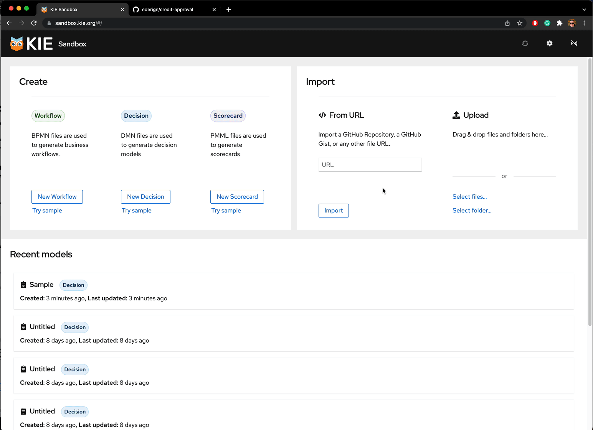
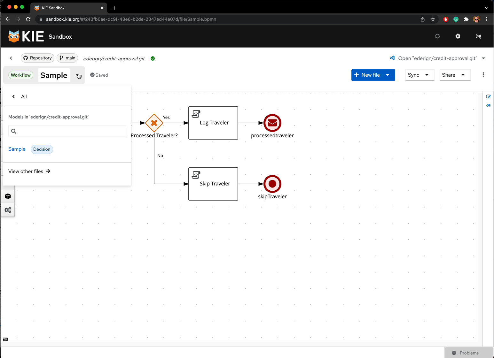
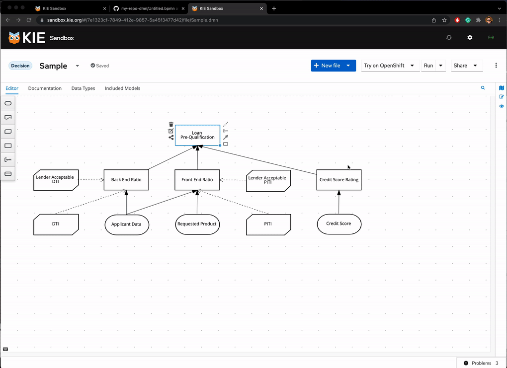
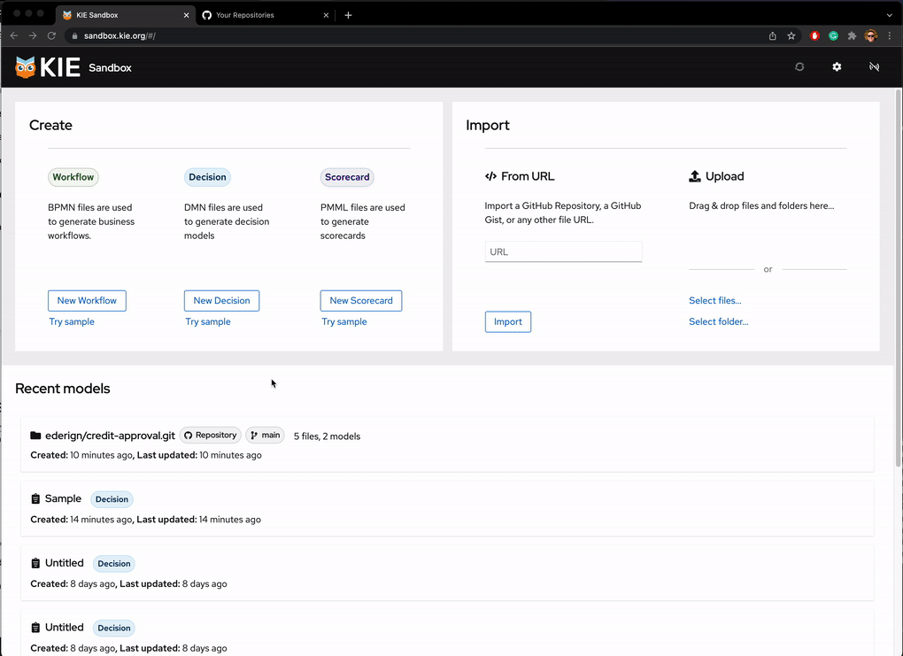
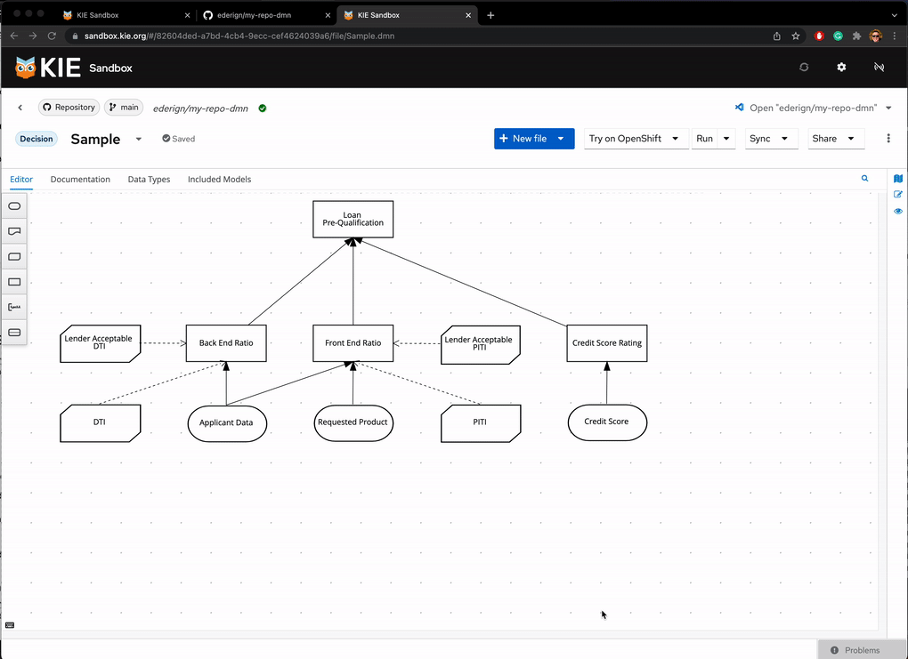
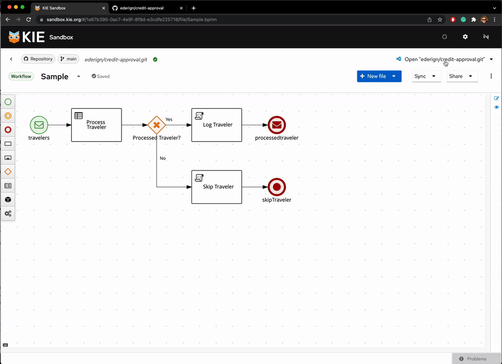
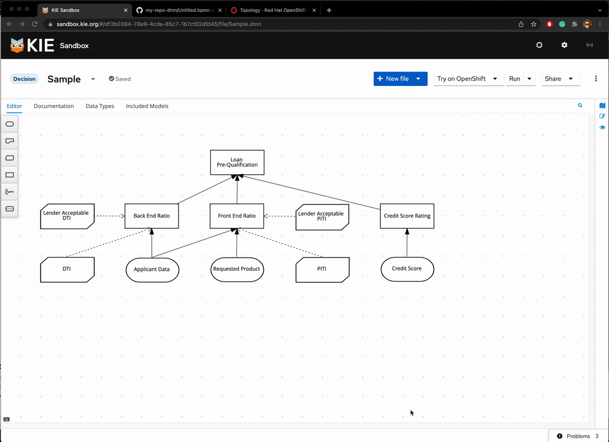

KIE Sandbox: top 7 key new features
In the last months of 2021, the “.NEW environment” (bpmn.new, dmn.new) received a massive update, and now it’s named KIE Sandbox! Dealing with complex models and collaborating with others has just become much easier.
In this blog post, let’s go for a walkthrough of the top new features of KIE Sandbox.
A fresh “.new” Home Page
We launched a brand new home page. One of the cool additions to our home is the ‘Recent models widget’, allowing quick access to your recent models and also, now can import projects direct from GitHub, a long-waited feature!

Multi-file support
KIE Sandbox now supports multiple files! Now you can have a set of numerous DMN and BPMN models and reference those, i.e., include a DMN Model to reuse his datatypes.

Test your DMN models
Since some releases ago, on every change of your DMN model, we will combine your DMN model and your form input and evaluate it on the DMN Engine. The significant part of this workflow is that it is really fast, looking almost instantaneous.
Now on Kie Sandbox, you can test multiple inputs simultaneously with our table view. See in action:

GitHub Integration
One of the critical highlights of Kie Sandbox is the integration with GitHub repositories.

You can now import a repository, create a repository from an ephemeral set of files, and push/Pull directly to/from a GitHub repository.

VS Code integration
With a single click on our UI, you can go to VS Code Desktop and vscode.dev and keep working on our Kie Sandbox models there!

Try on Open Shift
Do you want to share your decisions with someone to let them give it a try on your models? Just click on ‘Try on OpenShift’ to deploy your Decisions on Developer Sandbox for OpenShift.

Deploy your own version on Open Shift
Do you want to run KIE Sandbox in your cluster? The Kogito Tooling release 0.16.0 includes three container images to make it easy to deploy the KIE Sandbox to an OpenShift instance. Take a look at this blog post for more details!
How to start to use it?
It’s super simple. Just access https://sandbox.kie.org/
Thank you to everyone involved!
I would like to thank everyone involved with this release, from the excellent KIE Tooling Engineers to the lifesavers QEs and the UX people that help us look awesome!

{kind=link}
{kind=link}
{kind=link}
{kind=link}
{kind=link}
{kind=link}
{kind=link}